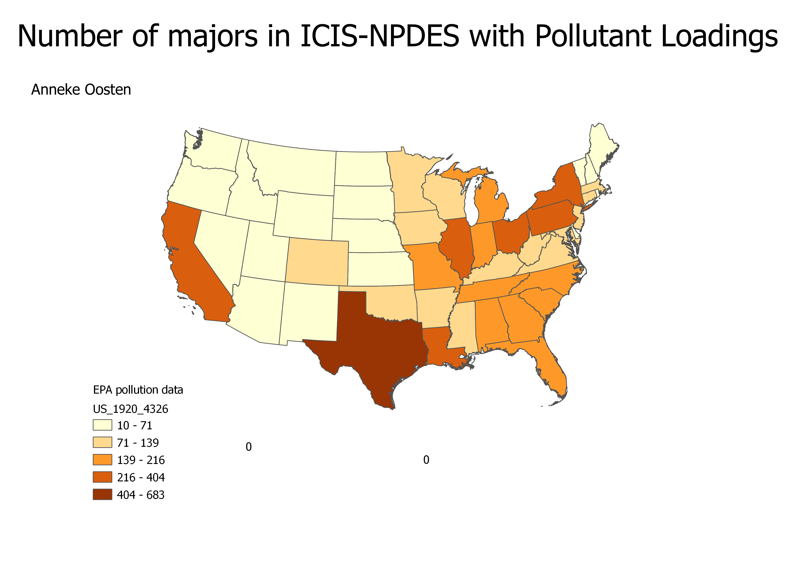

Homework 9: EPA pollution data choropleth
Anneke Oosten
This map is a chloropleth detailing the number of ICIS-NPDES Majors with pollutant loadings
ICIS-NPDES is an information management system maintained by the EPA that tracks permit compliance under the Clean Water Act. NPDES stands for the National Pollutant Discharge Elimination System, which is created by the Clean Water Act. Majors are facilities that dispel pollutants above a threshold determined in conjunction with the states and the EPA. Non-majors, also referred to as minors, dispel pollutants at a rate below that level, and are thus not included on this map.
Originally, I considered doing a map using symbols-specifically a pie chart of major and non-major pollutant loadings as parts of the total number. However, I ultimately decided that it was more important to communicate the amount of majors with pollutant loadings per state to identify where the worst pollution is than to identify which has the highest ratio of majors to minors, and a chloropleth is the best way to represent data that is strictly number totals.

Data used for this project
CSV dataset
Link to data source
Link to shapefile